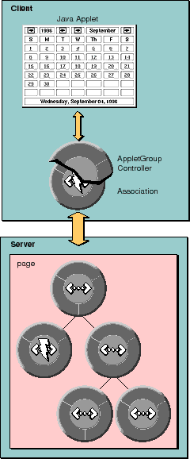

Table of Contents
Table of Contents  Next Section
Table of Contents
Next Section
Table of Contents  Previous Section
Previous Section
If you don't have the applet's source code, you must create your own subclass of com.apple.client.webobjects.Association. As explained in "How Client-Side Components Work", client-side components use an Association to communicate with the component on the server. Associations can extract values from the client-side component, set values in the client-side component, and trigger action methods on the server.
If you do have the source code, you may still want to provide your own subclass of Association. However, you're more likely to want to use the provided subclass SimpleAssociation (which is what all of the client-side components packaged with WebObjects use). All associations are linked on one side to one of your applets, and on the other to an AppletGroupController. AppletGroupController is a hidden Java applet (on the client) that controls the visible applets and handles communication back to the server (see Figure 14). The AppletGroupController accesses each of the applets on the page using an Association. It is through these Associations that the data or state each applet manages is passed to the AppletGroupController and, through it, to the server. When an applet fires an action on its association, the AppletGroupController does what is necessary to ensure that the bound method in the server is invoked. An AppletGroupController, once downloaded, knows what class of Association to use and what the destination applets are. To determine these, it inspects the visible applets on the page and looks for some special parameters.

Figure 14. The Principal Objects Involved in Client-Side Components
Table of Contents Next Section